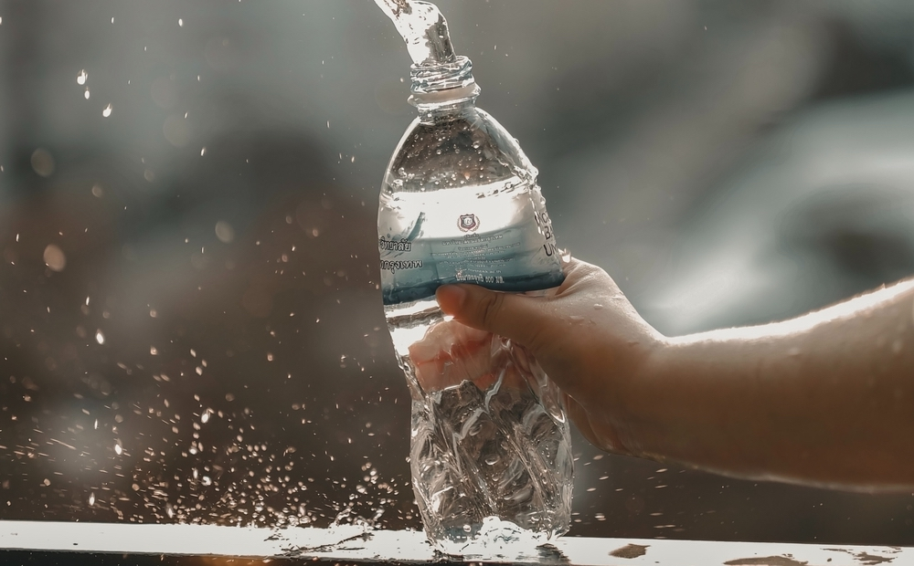
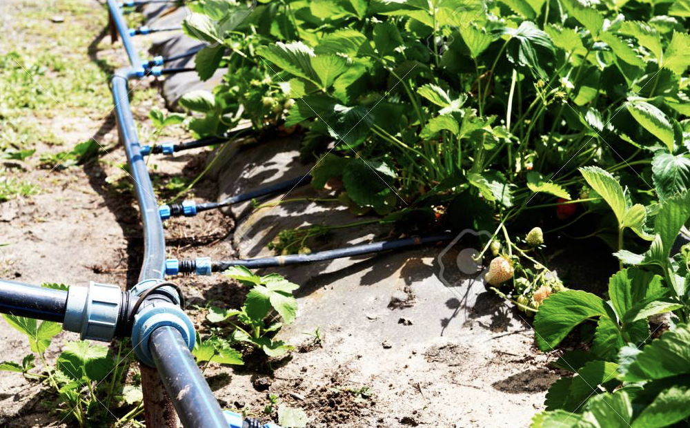
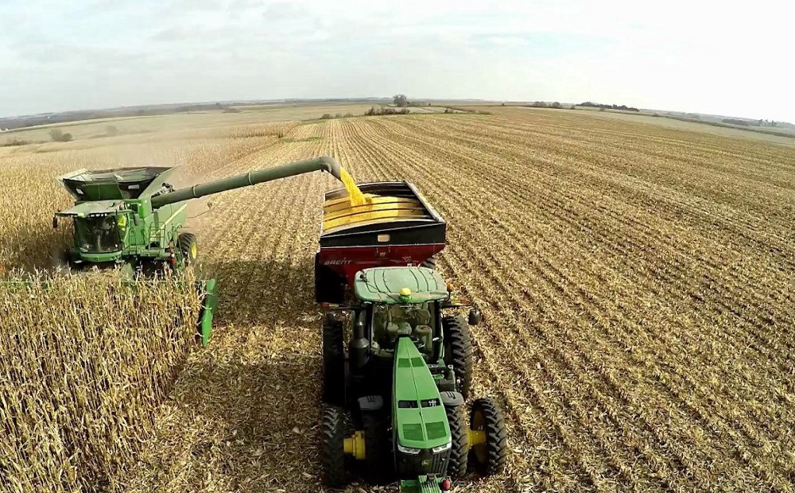
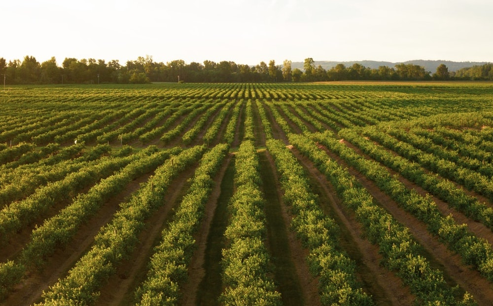

How to Save 70% of Global Freshwater
Despite being by far the most dominant species on earth, humans are not by any means self-sufficient. We depend on a lot of things for both our survival, and general wellbeing.
In recent years, a lot of these things — such as royalty, religion, and colonization — have become frivolous. Most necessities in human history have become less of… well, necessities over time. Our technological advancements have reduced our demand for these entities by increasing their supply.
There are two essentials, however, that don’t — and will never — fall under this category: water and food. It’s common knowledge that without access to these two resources, we’d all perish in days.
Despite knowing that these two essentials are at the backbone of our very survival, most of us aren’t aware of the inefficient practices going on behind the scenes.
If you’re reading this, your access to food and water is significantly greater than that of most people. Nearly 1/2 of the world’s population — more than 3 billion people — live on less than $2.50 a day. More than 1.3 billion live in extreme poverty — less than $1.25 a day
We talk about water as some miracle renewable resource, but if that were the case, why are 1 in every 2 people barely living. Why does 1 in every 2 families have to beg for sheer life, while some can afford luxuries past compare?
Even though we only have access to 3.5% of global water, our access to the resource is not the issue; it’s the way we use it.

The Current Problem
70% of global freshwater is used in agriculture respectively. If this number were to be reduced, trillions upon trillions of gallons of water could be saved.
The other 30% consists of everything else: domestic usage, industrial usage, and everything in between.
It’s crucial that given the fairly limited resources that we have to work with, we use them to the maximum efficiency.
Our population is estimated to grow to 9 billion in the next 40 years, and to keep up with this increased demand, we’re going to need to increase our food production by 50% to prevent mass famine.
If anything, this should serve as an indicator as to how inefficient the agricultural industry currently is. There’s a lot of room for improvement regarding how we can use less fresh water in the irrigation of plants.
Over the past few years, several natural factors have also started to negatively influence farmers and farms, most notably global warming.
As the climate continues to rapidly change, previous guarantees such as the quality of their produce and investment profit have started becoming uncertain, due to numerous factors such as floods or droughts.
In the past couple of decades, we’ve seen an extremely high amount of innovation in the agriculture industry. While several of these initiatives have solved numerous mini-problems, the majority of said initiatives don’t solve the most important problems in the area.

What’s being done right now
Currently, there are a large number of solutions that aim to improve the agriculture process, from monitoring crops at a basic level, to automatically watering them.
For example, Smart AG is creating self-driving tractors, using AI to detect unhealthy crops. These solutions are crucial to advancing the field, but they require farmers to act on this data — an unimplementable solution because most farmers aren’t proficient in back-end database skills.
Although this may be good, humans need to sleep and eat, and they can’t tend to every single crop one at a time, there’s too many of them. The solution should be something that doesn’t even need humans.
If we have technologies like AI and IoT changing the world in fields like medicine, security and more, why don’t we leverage them to solve one of the world’s biggest problems?

Solarum, surpassing the status quo of agriculture.
Solarum envisions a bright and better future for farming. If the problem of inefficiencies within agriculture was solved, there would be so many benefits for society.
We could massively increase the output of farms, reduce the amount of produce that is being wasted by consumers, and most importantly reduce the number of resources used for the industry.
A future like this would require a system that is both scalable and expandable, reducing human interactions that cause inefficiencies in the system.
To solve this, Solarum uses a multitude of exponential technologies to create a 3-step cycle that automates and optimizes agriculture and irrigation practices.
The goal of the company is to bring much more ease and optimization into farming and agricultural practices, specifically those dealing with crops.
Simply put, we are creating a smarter way of saving resources and a more advanced approach to automated farming.
The long-term vision is to minimize or even eliminate human interaction with crops and completely automate the farms on a large scale.
Not only do we want these farms to optimize resources like water usage, but we also want to have adaptable farms that can automate crop planting and maintenance, allowing us to meet global demands for specific crop yields.
To tackle the problem of inefficient agricultural systems, we have designed a data-driven precision agriculture solution, powered by the most innovative emerging technologies. Solarum’s algorithm makes the majority of decisions, such as the number of crops, nutrients, and water to deliver to specified areas.
Our approach could prevent several big problems within agriculture, such as crop damage, the overuse of water, and nutrient deficiencies.
Odio dignissimos ducimus qui blanditiis praesentium voluptatum deleniti atque corrupti dolores et quas molestias excepturi sint occaecati cupiditate non provident, similique sunt in culpa.

The process
We designed the system so there are 3 main steps to optimizing and maintaining an automated farm. Once gone through all of these, we will be able to achieve the end goal.
Data Collection
The first step of the cycle is the collection of crop data. This will enable our supervised learning AI to make predictions, as mentioned in the next step.Data aggregation is an essential part of making the system more accurate and reliable. By understanding the current crop conditions, we can optimize the rest
Intelligence
This step will leverage the use of a supervised learning AI that can give specific insights on how crops can be improved and potential future concerns. Our predictive-analysis AI can calculate impacts on crop health based on local data, (ex. Soil fertility) and global data (ex. Disease).
Having intelligence and monitoring in the system will allow smart decisions to be made acted upon. (step 3)
Actuation
This step will use the data from intelligence to create changes in the environment, such as planting different seeds, distributing nutrients to plants, or even collecting the ready crops. Essentially taking theory, and putting it into practice.
We don’t incorporate fossil fuels in our solution, and as a result, our solution is climate positive. Our resources use geothermal and solar energy, which amplify each other’s effects. Our AV will execute on a concept known as laser leveling, a water-saving technology using scarce groundwater optimally by ensuring even coverage.
We automate drip irrigation by using MIT-backed methods, as well as adjusting pump pressure based on calculations from our supervised learning AI. This ensures optimized water usage.
At a high level, we get data, create predictions based on said data, and then execute them. This is our solution to fight one of the world’s most pressing problems.